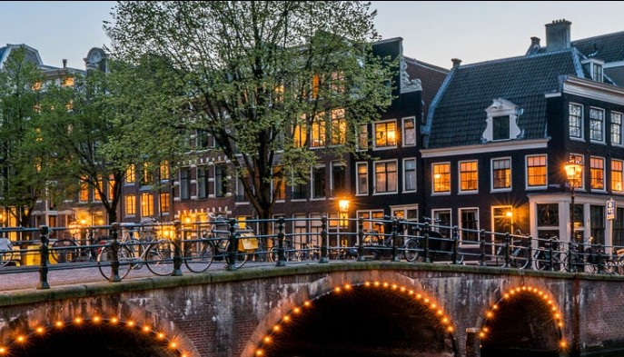
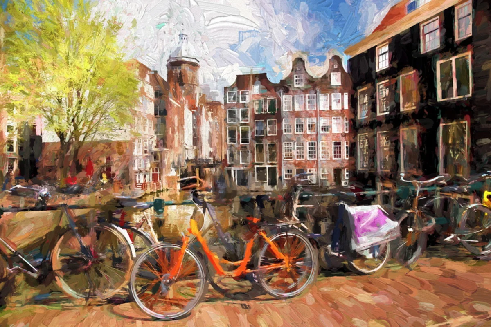
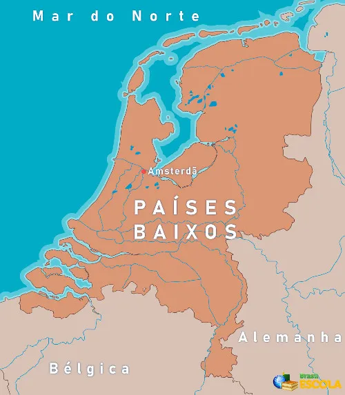
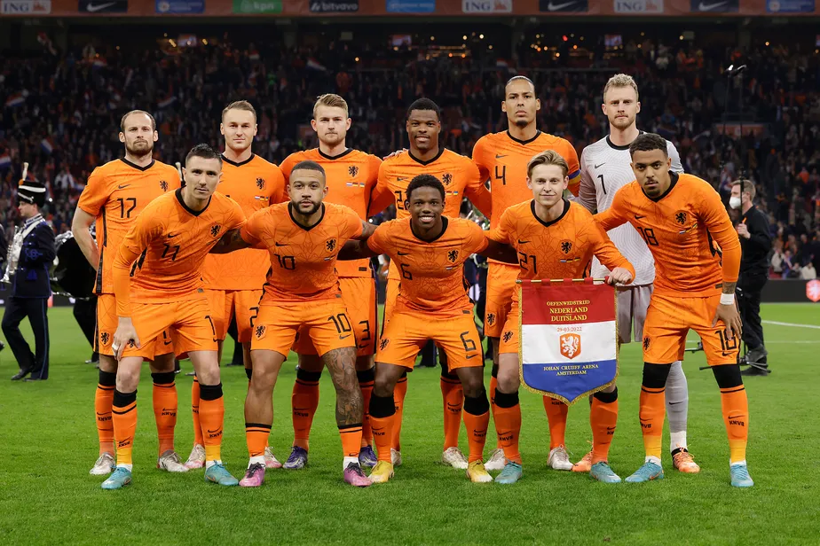

Os Países Baixos, informalmente chamados de Holanda, são uma nação localizada na Europa Ocidental, conhecida por sua estrutura política democrática, sua capital Amsterdã e o governo sediado em Haia. O território, em grande parte abaixo do nível do mar, foi em parte conquistado com diques e pôlderes, formando um grande delta dos rios Reno e Mosa.
O país é famoso por seus moinhos de vento, tulipas, tamancos e sua tolerância social, refletida em políticas liberais sobre temas como drogas e eutanásia. Com um dos melhores índices de desenvolvimento humano do mundo, é também um centro jurídico internacional, sediando tribunais como o Tribunal Penal Internacional, além de ser membro ativo da União Europeia e da OTAN.
 imagem de uma ponte na Holanda
A frase:
O Brasil é um dos países com maior
potencial de crescimento no mundo. Mas, infelizmente, é mal organizado
em holandes fica:
Brazilië behoort tot de landen met het grootste groeipotentieel ter wereld. Maar helaas is het slecht georganiseerd
O nome "Países Baixos" tem origem em sua localização geográfica baixa em relação ao nível do mar. Desde os tempos do Império Romano, a região era chamada de Germania Inferior. Mais tarde, termos como "Neder-landen" e "Pays d'en bas" reforçaram essa ideia. Já "Holanda" originalmente se refere apenas às províncias de Holanda do Norte e do Sul.
Em 2019, o governo lançou uma campanha para promover o uso do nome oficial “Países Baixos” no lugar de “Holanda” ao se referir ao país como um todo. Desde 2020, o país adotou oficialmente o nome internacional "Netherlands" para sua identidade global.
A história da Alemanha é marcada por profundas transformações políticas, sociais e culturais. Na Antiguidade, a região era habitada por diversas tribos germânicas, que resistiram ao domínio romano. Durante a Idade Média, o território fez parte do Sacro Império Romano-Germânico, uma confederação de estados que existiu por quase mil anos. No século XIX, sob a liderança da Prússia e de Otto von Bismarck, a unificação alemã foi concluída em 1871, formando o Império Alemão.
No século XX, a Alemanha teve um papel central em dois grandes conflitos mundiais. Derrotada na Primeira Guerra Mundial, enfrentou forte crise econômica e política durante a República de Weimar, o que contribuiu para a ascensão do nazismo. Sob o comando de Adolf Hitler, o país mergulhou na Segunda Guerra Mundial e no Holocausto, resultando em sua derrota em 1945 e na subsequente divisão entre Alemanha Ocidental (capitalista) e Alemanha Oriental (socialista), em plena Guerra Fria.
A reunificação alemã ocorreu em 1990, após a queda do Muro de Berlim e o colapso do regime comunista na Alemanha Oriental. Desde então, a Alemanha se tornou uma das principais potências econômicas e políticas da Europa, conhecida por sua democracia estável, alto padrão de vida e forte presença internacional.
 pintura holandesa do século XVIIA Holanda, ou Países Baixos, está localizada no noroeste da Europa e é conhecida por sua geografia única e desafiadora. Aproximadamente um terço de seu território está abaixo do nível do mar, o que exigiu a construção de um elaborado sistema de diques, pôlderes (terras recuperadas do mar) e canais para conter as águas e expandir áreas habitáveis e agrícolas. Essa engenharia hidráulica é uma das marcas do país.
O território é bastante plano, com poucas elevações significativas, o que favorece o uso da bicicleta como principal meio de transporte. Os principais rios que cortam o país, como o Reno, o Mosa e o Escalda, formam um vasto delta que contribui para a fertilidade do solo. A costa é banhada pelo mar do Norte e abriga dunas naturais que também ajudam na proteção contra inundações. O clima é temperado oceânico, com verões suaves, invernos moderados e chuvas bem distribuídas ao longo do ano.
 imagem geográfica da HolandaO futebol é um dos esportes mais populares na Holanda, com uma rica tradição e uma grande paixão dos seus cidadãos. O país tem uma história distinta no futebol internacional, tanto no nível de clubes quanto de seleções nacionais. A seleção nacional da Holanda, conhecida como "Laranja Mecânica", tem sido uma das mais respeitadas do mundo, alcançando a final da Copa do Mundo em três ocasiões (1974, 1978 e 2010), embora nunca tenha conquistado o título. O estilo de jogo desenvolvido pelo treinador Rinus Michels na década de 1970, conhecido como "futebol total", teve uma enorme influência no futebol mundial.
Os clubes holandeses também são altamente competitivos, com destaque para o Ajax de Amsterdã, que é um dos clubes mais bem-sucedidos da Europa. O Ajax conquistou várias edições da Liga dos Campeões da UEFA e é reconhecido por sua forte ênfase na formação de jovens talentos. Outros clubes de destaque incluem o PSV Eindhoven e o Feyenoord, que também possuem históricos de sucesso tanto a nível nacional quanto internacional.
A liga de futebol da Holanda, a Eredivisie, é uma das mais competitivas da Europa, conhecida por seu futebol ofensivo e pela capacidade dos clubes de revelar jogadores excepcionais que muitas vezes atraem clubes de outras grandes ligas. A rivalidade entre Ajax, Feyenoord e PSV é uma das maiores do futebol holandês, com jogos entre esses times gerando grande expectativa e paixão.
 Foto da eleção holandesa antes de uma partida| Títulos Conquistados | |
|---|---|
| Competição | Resultado |
| Eurocopa 1988 | Campeão |
| Copa do Mundo 1974 | Vice-campeão (Perdeu para Alemanha Ocidental) |
| Copa do Mundo 1978 | Vice-campeão (Perdeu para Argentina) |
| Copa do Mundo 2010 | Vice-campeão (Perdeu para Espanha) |
| UEFA Nations League 2018–19 | Vice-campeão |
| Jogos Olímpicos (1908, 1912, 1920) | Medalha de Bronze |